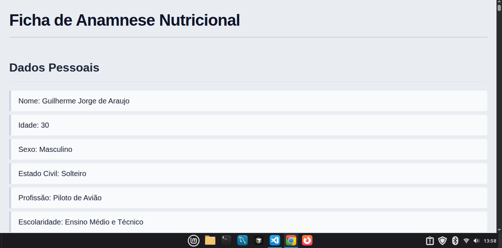

Lógicas JS para Sistemas simples de Cadastro, Vendas, Conta Bancária e Avaliação de Funcionários.
Quatro aplicações desenvolvidas para consolidar os conceitos estudados em Variáveis, Objetos e condicional (if/else)...
Ver projetoEste semestre foi dedicado à lógica, interação e interfaces dinâmicas usando DOM, eventos e comportamento web.
Este período foi empenhado a aprofundar meus conhecimentos em JavaScript, linguagem fundamental no Desenvolvimento Web, Servidores (Node.js) e até mesmo IoT. É necessário dizer que neste semestre foquei em entender sua lógica e comportamento, não focando tanto em frameworks ou bibliotecas. Em contrapartida, este semestre foi essencial para afeiçoar-me no que tange à lógica de programação e a entender melhor como desenvolver sistemas com ênfase já em interatividade.
Abaixo estão listados os principais tópicos estudados, com links para os objetivos e resoluções de cada um. Estes tópicos estão dispostos cronologicamente, e cada um deles foi consolidado em exercícios e em projetos práticos.
Compreensão de `let`, `const`, `string`, `number` e operadores matemáticos básicos.
Exercícios de múltiplas condições usando agora o Switch. Por meio destes, tive a oportunidade de aprender o uso do `case`, `break` e `default`.
Criação e manipulação de estruturas de dados baseadas em pares de chave e valor, com ênfase em tópicos do mundo real.
Manipulação de listas com métodos como `push`, `pop`, `map`, `filter`, `reduce` e entre outros...
Controle de estruturas de dados hierárquicos em JavaScript, aplicando cálculos matemáticos e condicionais.
Controle de fluxos de repetição em JavaScript com execução inicial garantida. Aplicado na manipulação, atualização e validação segura de dados em objetos aninhados.
Desenvolvimento de blocos reutilizáveis que processam parâmetros dinâmicos para automatizar cálculos, validar dados e isolar a lógica do sistema visando uma melhor organização e manutenibilidade.
Uso de funções enviadas como parâmetros para executar ações no momento certo. Essencial para responder a cliques do usuário, controlar o tempo e processar dados dinamicamente.
Uso prático de funções integradas do JavaScript para transformar dados com mais agilidade. Manipulando Strings, Objetos e Arrays e aplicação de .map(), .filter(), .split() e entre outros métodos que facilitam a manipulação de dados e a construção de soluções mais eficientes.
Alteração e controle de elementos da página em tempo real com JavaScript. Desenvolvimento de lógica para capturar cliques do usuário, modificar textos e criar componentes dinâmicos.
Além de exercícios de fixação avulsos, fomos impelidos à resolver problemas práticos mais complexos, que exigiam a junção de diversos conceitos estudados. Estes projetos foram desenvolvidos em grupo, e cada um deles ajudaram na consolidação do meu aprendizado de uma forma mais concreta.
Quatro aplicações desenvolvidas para consolidar os conceitos estudados em Variáveis, Objetos e condicional (if/else)...
Ver projeto
Aplicação prática dos principais conceitos de JavaScript aprendidos no semestre, destacando a integração do DOM, manipulação do BOM e o uso estruturado de condicionais, laços de repetição e objetos.
Ver projetoComo disse anteriormente, meu foco durante este semestre foi em lógica com ênfase em JavaScript, todavia, pareceu por bem ainda durante as férias de transição entre o 1º e o 2º semestre, continuar estudando HTML e CSS, e por conseguinte, realizei estes dois cursos da Cisco Networking Academy, que me ajudaram a relembrar e fixar sintexes importantes no desenvolvimento front-end.
Entendendo os Fundamentos da linguagem de marcação: elementos
semânticos ( <div>, <h1>,
<p>), atributos como id,
class e target, além de formulários,
usando <form>, <input> e
<button>, acessibilidade com
alt e boas práticas a seguir na construção de
páginas Web.
Conhecendo melhor como funciona a estilização de páginas web,
analisando de forma mais acurada os layouts
flexbox e grid, animações com
@keyframes, responsividade com @media,
acessibilidade visual, boas práticas de organização de código e
entre outros tópicos que tangem a esfera do Desenvolvimento Web,
unindo uma estrutura sólida a um design mais fluido e atraente.
Interessado em ver os próximos passos ou colaborar em projetos de estudo? Vamos conversar.